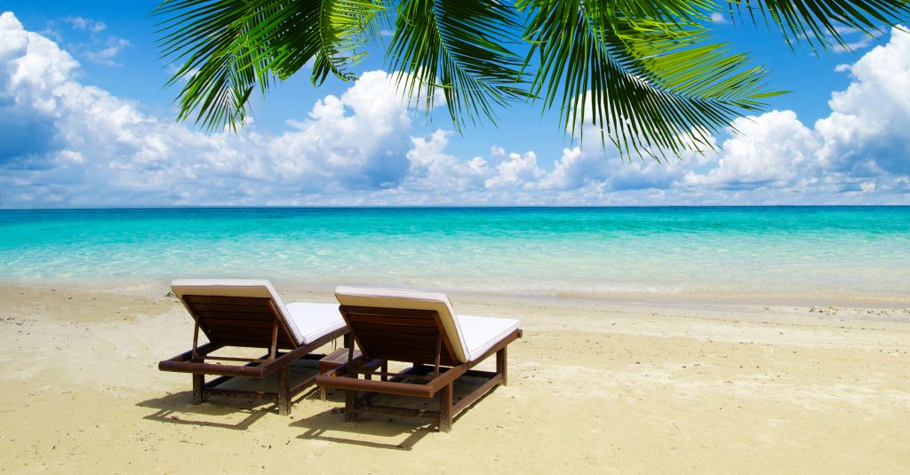

What is there to do in hot Montana summers?
Montana is home to over 3,223 named lakes which provides an unbelieveable amount of boating and water actcivities for Montana residents and visitors. These freshwater lakes get warm in the summer but freeze over in the winter. Although there is a lot, not every lake allows recreational activities, so make sure to check your local laws and regulations. At these lakes, tubing and wake surfing are some very popular activities. Tubing consumes younger kids summers, while many teenagers and young adults love wake surfing. On the weekends in the summer, boat ramps at lakes like Hauser Lake, will be full of wake surfing boats. One of the most popular activities in Montana is camping. There are TONS of camping sights that surround lakes and are littered throughout national forests. All summer long, campers will take up nearly every spot in these campsites. Traveling to remote spots like Yellowstone and Glacier are popular spots to get away and camp out with family and friends. These national parks are famous in the summers. People come from world wide to take in these national wonders, with Glacier having over 3.5 million visitors each year and Yellowstone getting over 3.8 million per year.
Visit the links on the left to explore Montana in the summer!